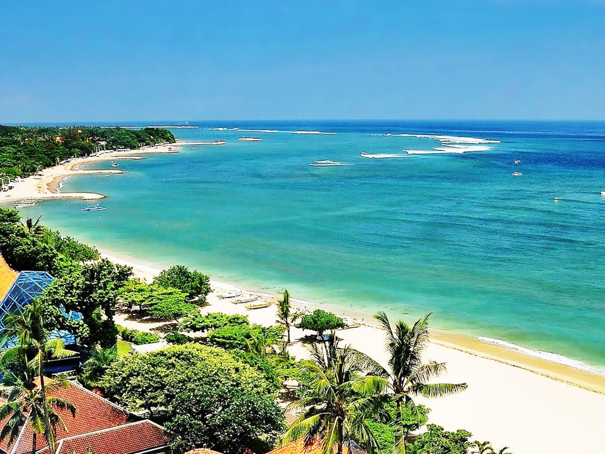
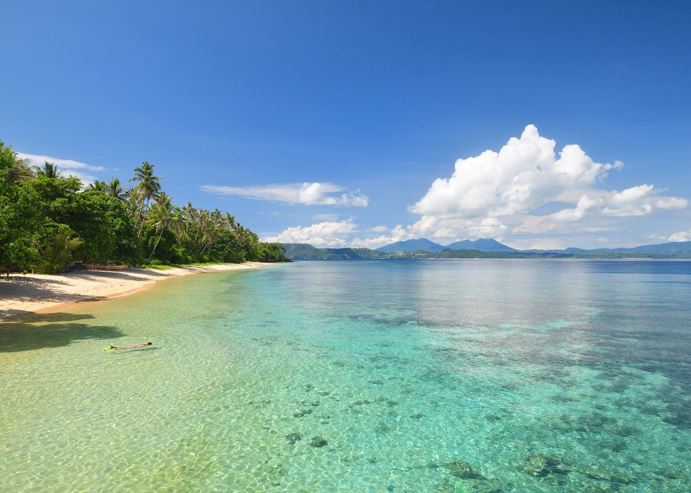

PESONA INDONESIA

Raja Ampat Papua
Destinasi wisata yang merupakan wilayah kabupaten di Papua Barat ini terbentang luas berupa kepulauan. Tidak kurang dari 600 pulau membentang luas di kabupaten ini. Raja Ampat identik dengan pesona alam bawah lautnya. Puluhan hektar terumbu karang tumbuh dengan subur. Terumbu karang ini menjadi rumah bagi ratusan spesies satwa laut.
Pesan Sekarang

Pantai Kuta, Bali
Sebagai tujuan wisata internasional yang diincar banyak orang, Pantai Kuta Bali memiliki banyak keistimewaan yang menjadikannya ideal untuk dikunjungi.
Pesan Sekarang

Bunaken, Sulawesi Utara
Berwisata selam scuba atau scuba diving, menjadi salah satu daya tarik Taman Nasional Bunaken. Para penyelam akan dimanjakan dengan kecantikan ikan-ikan tropis serta terumbu karang yang eksotis di salah satu perairan dengan biodiversitas tertinggi di dunia.
Pesan Sekarang